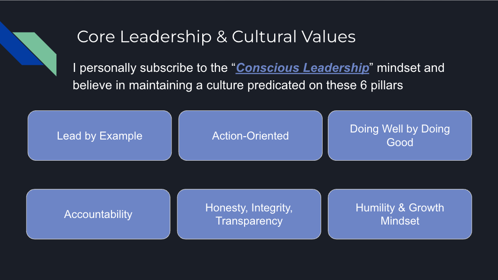
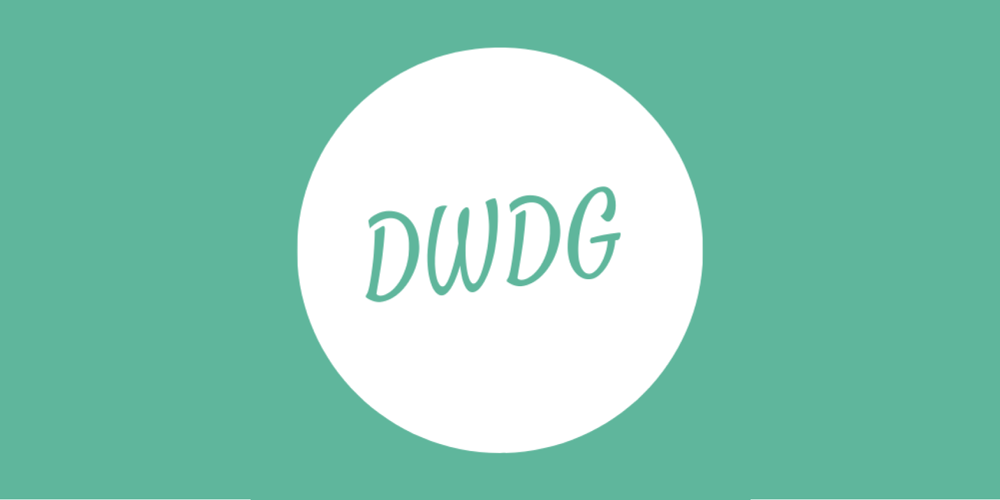
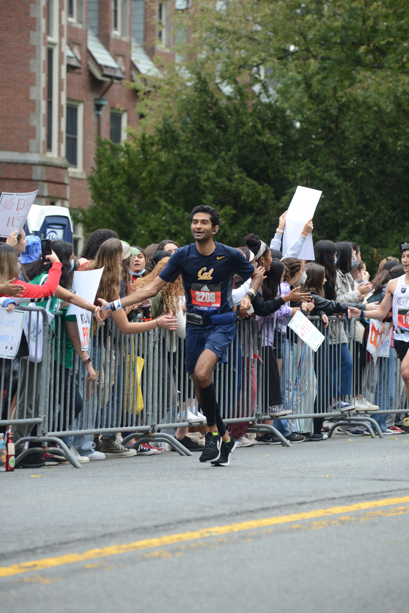
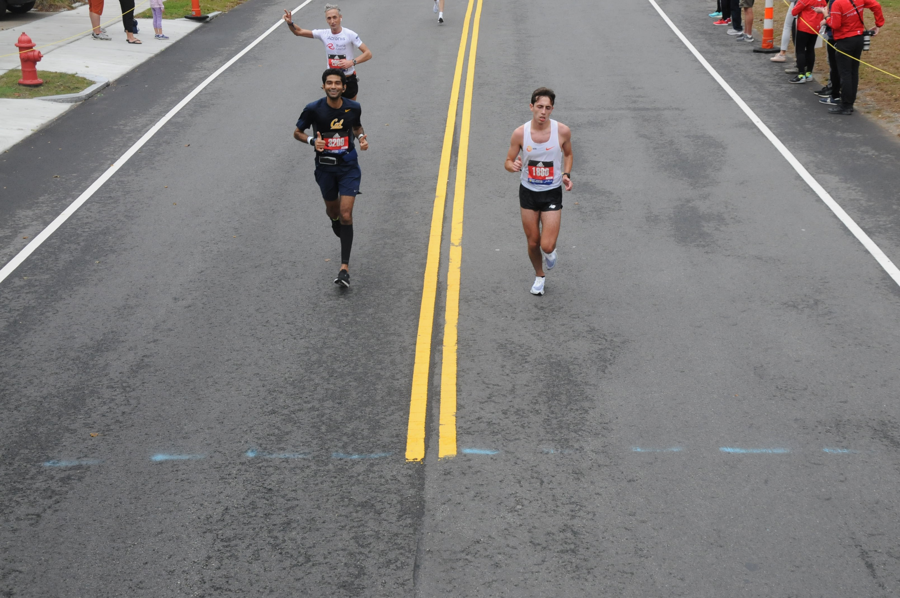

Who am I?
I'm an entrepreneurial, data-driven engineering leader and builder looking to Do Well by Doing Good. I live by a simple tenet embodied by the quote on my homepage: create more than I consume.
I love to create, whether that is code, patents, papers, articles, books, music, videos, pictures...you name it! Work-wise I spend my time building teams to leverage ML for mission-critical business applications. For fun, I write, and build side projects. I keep myself calm and collected through the noise by running marathons and playing the piano.
You can learn more about my leadership and work history below.
Leadership
"The most important thing is to try and inspire people so that they can be great at whatever they want to do." - Kobe Bryant
Leading others is a gift but requires clear vision, discipline and empathy. I have led my own startup including engineering, marketing and sales and have since been leading teams of data scientists, machine learning engineers, software engineers and managers.
Leaders are only as good as their teams and the best teams are diverse, inclusive and have a shared sense of purpose. I strongly believe leaders must have clear cultural tenets they live by and share widely to ensure strong alignment in the teams they lead and to build a shared sense of purpose.
I personally subscribe to the Conscious Leadership mindset characterized by 6 main cultural pillars:
- Leading by Example
- Action-Orientedness
- Doing Well by Doing Good
- Accountability
- Honesty, Integrity and Transparency
- Humility and Growth Mindset

While the cultural leadership tenets are good to set an overall culture for all types of roles, a technical leader must also focus on key functional responsibilities (in no particular order):
- Technical Excellence
- Excellent Design Docs
- System Architecture
- Technical Coaching
- Cross-functional Communication
- Career Growth and Mentorship
- Recruiting
- Project Management
A great technical leader must balance the needs of the business with the needs of the team through clear, concise and empathetic communication with the team, leadership and cross-functional orgs (product, BD, etc.) as well as data-driven decision-making and performance evaluation based on clear and quantitative business outcomes.
I love each of these aspects and have been lucky enough to practice them in multiple technical leadership roles but am continually learning. Given my background is in Machine Learning, I would be remiss if I didn't mention that ML leadership is a bit more complex (see Software 2.0). Given the probabilistic nature of ML products, a technical leader must:
- Manage Cross-functional Expectations
- Educate Customers and Cross-functional Leaders
- Accelerate Research to Production
Building probabilistic products is always more difficult than deterministic ones. While the majority of customers, as the majority of the population, are less trained in statistics, even those that are well-tuned to it (e.g. biopharma, insurance, etc.) often struggle with setting the right expecations. As an ML leader it is as important to help sell the product as it is to educate customers on the capabilities, limitations and potential gotchas. The more ML products are incorporated into mission-critical systems, the more the role of an ML leader will become more ubiquitous. As an ML leader today, I aim to train the next group of ML Leaders :)
Work History
I have over 10 years of experience building ML-powered software teams with a deep expertise in applying Computer Vision, NLP and LLM models to customer needs and R&D initiatives. You can find more details on my LinkedIn or Resume but I've given a short description of my work and educational history along with salient skills.
## 🧑🏽🎓 Education
* Stanford: MS EE - AI focus, MS MS&E - dropped out
* Berkeley: BS EECS, BS MatSci, MS MatSci
## ⚙️ Skills
* **Machine Learning & Engineering**: Technical Roadmap Development, Machine Learning, MLOps, ML Infrastructure, Computer Vision, LLMs, NLP, Architecture Design, Algorithm Design, End-to-end Application Development
* **Leadership**: Strategic Planning & Execution, Project Management, Prioritization, Staffing, Process Improvement, Cross-Functional Collaboration, Staff Hiring & Management, Training & Development, Coaching & Mentorship, Interdepartmental Alignment, Change Management, Budget & Resource Allocation, Executive Reporting, Agile
* **Software**: Python, Pytorch, Tensorflow, Seaborn, Jupyter, Sagemaker, Ansible, AWS, Javascript
## 💼 Experience
**Associate Director, Machine Learning** @ [PathAI](https://www.pathai.com/) *(Jan 2022 - Present)*
* PathAI offers AI-powered research tools and services for pathology to biopharma clients to facilitate drug development and translational research using CV and other techniques.
* Lead 8-person ML product team building [Multiple Instance Learning](https://arxiv.org/abs/2206.01794) CV models to predict molecular biomarkers deployed to translational research
* Guided development of molecular biomarker prediction CV models: RAS+RAF, ROS1, cMET in Non-small cell lung cancer and MSI for colorectal cancer using pathology WSIs
* Managed 12 MLEs, coached 15+ ML members through career growth, matched projects to skills, facilitated multiple promotions of high performers and trained MLEs interested in management
* Facilitated cross-functional discussions on staffing, headcount and prioritization of business unit-wide and ML team-wide projects to enable customer delivery of [AI Products](https://www.pathai.com/ai-product-menu/) and Translational Research outcomes
* Hosted multiple ML and Product team-wide hackathons with >60 engineers & >100 participants to inspire MLEs, MLOps, Biomedical Data Scientists and speed up deployment of new research (e.g. Instance Segmentation, Foundation Models, etc.) to multiple AI Products deployed to customers
* Lead cross-functional research of 15+ ML engineers to improve generalization of pathology CV models to new labs and scanners for [AI Products](https://www.pathai.com/ai-product-menu/): PathExploreTM, AIM-PD-L1TM, AIM-NASHTM and IBD ExploreTM generating >$5M in new revenue and reducing ML development time by 25%.
* Facilitated exploration and consolidation of domain generalization research (representation learning, normalization, augmentation) and applied them across the [PathAI AI product portfolio](https://www.pathai.com/products-and-services/). 3 ArXiv pre-prints.
* Lead cross-business unit research team of 10+ ML engineers into tissue segmentation and cell classification foundation models for pathology to reduce ML development time by 50%
* Advised multiple early research initiatives on Foundation Models, Uncertainty Heatmaps, Data Efficient Methods, Annotation Efficiency.
**Director of ML Solutions** @ [One Concern](https://oneconcern.com) *(Jan 2019 - Jan 2022)*
* One Concern offers AI-powered natural disaster damage assessments to governments, financial firms and enterprises to help build resilience.
* Developed new technical analytical organization (org struct, comp, financial planning, budgeting, career ladder, prioritization, etc) from scratch which develops model prototypes to integrate impact statistics from natural disasters into customers' workflow.
* Led technical diligence and PoC implementation to secure [$100M investment from SOMPO](https://techcrunch.com/2021/06/03/one-concern-sompo/) to promote disaster preparedness in Japan.
* Hired & formulated JDs for ~20 data scientists, engineers, and technical subject matter experts (Interviewed 100+).
* Managed and coached 5+ Solutions engineers and Data Scientists through career growth.
* Facilitated process for data, model, and code versioning system for efficient model deployment across orgs.
* Initiated COVID-19 modeling effort and worked with product to model the spread w/in workplaces [COVID Calculator](https://covid19.oneconcern.com/) to help 1000s of enterprises decide their return-to-work policy.
* Co-authored paper submitted to PLOS One to share our methods with the community.
* Facilitated patent submission for above integrated tool and paired stochastic network model to enable long-term IP for the company (see 📜 Patents).
**MLOps + ML/AI Consulting** @ Lotus AI, Inc. *(2019 - Present)*
* Consulting and implementation for startups on ML algorithms and the best fit ML stack to implement for their use case across NLP, traditional ML and CV.
**CEO & Co-founder** @ [Datmo](https://datmo-website.herokuapp.com) [(acq. One Concern)](https://www.govtech.com/biz/one-concern-acquires-startup-datmo-for-ai-expertise.html) *(October 2015 - Jan 2019)*
* Datmo was an MLOps platform and AI consulting company to help data scientists deploy and manage machine learning models in production.
* Raised seed round, built multiple ML-powered products, secured multiple customers and facilitated acquisition.
* Hired & formulated JDs for ~15 engineers, data scientists and sales people (Interviewed 50+).
* Managed & coached 10 on-shore & off-shore engineers, data scientists, and sales via an agile process.
* Developed novel CNN architecture & NER + ASR combined algorithm trained on labeled image and video web data to extract named and generic entities (see 📜 Patents).
* Developed and optimized a speedy search index for real-time image, video, and video clip retreival via post hoc processing of concepts (see 📜 Patents).
* Iterated on requirements and implementation w/ media customers for large-scale video and image search.
* Developed open source project to facilitate MLOps deployment for customers - [datmo github](https://github.com/datmo/datmo).
* Built MLOps platform for multiple data modalities: CV, NLP, and numerical ML algorithms (see 📜 Patents).
* Iterated on requirements and implementation w/ fintech & gaming customers for MLOps tools to operationalize machine learning w/in data science teams.
**Fellow** @ [Second Time Founders](https://secondtimefounders.com/) *(2020 - present)*
* Selective peer-to-peer network to learn and practice [15 key conscious leadership commitments](https://conscious.is/) with a like-minded network of entrepreneurs supporting each other to solve difficult challenges together (hiring, fundraising, etc.).
**Entrepreneurial Leaders Fellowship** @ [Stanford](https://stvp.stanford.edu) & [Threshold Ventures](https://threshold.vc/) *(2014-2015)*
* Selective Graduate Fellowship offering practical coursework and leadership coaching and development. [Full Details](https://stvp.stanford.edu/tvf)
**Teaching Assistant - Machine Learning, Devices, and Physics** @ [Stanford](https://stanford.edu) *(2013-2015)*
* Taught students mathematical and statistical fundamentals of machine learning ([In-person CS 229 Syllabus](http://cs229.stanford.edu/syllabus.html), [Online Coursera Course](https://www.coursera.org/learn/machine-learning)), ran hardware labs for introductory circuits and device courses and physics discussions and labs for introductory mechanics, E&M, and MatSci courses.
**Machine Learning Engineering Intern** @ [ThermoFisher Scientific](https://www.thermofisher.com/us/en/home.html) *(2014)*
* ThermoFisher builds diagnostic and scientific equipment. Developed and tested ML models for real-time PCR analysis and benchmarked against existing techniques.
**Software Engineering Intern** @ [CollegeFeed (acq. AfterCollege)](https://www.crunchbase.com/organization/collegefeed) *(2013)*
* CollegeFeed offered a student-optimized version of LinkedIn. Developed end-to-end job recommendation system for display on student profiles.
**Software Engineering Associate** @ [StartX Accelerator](https://startx.com/) *(2012)*
* StartX is a startup accelerator at Stanford to help early-stage companies fast forward to the next phase. Built and maintained the Ruby on Rails website for branding and operations.
## 📝 Papers
* ["ContriMix: Unsupervised disentanglement of content and attribute for domain generalization in microscopy image analysis"](https://arxiv.org/abs/2306.04527)
* ["Synthetic DOmain-Targeted Augmentation (S-DOTA) Improves Model Generalization in Digital Pathology"](https://arxiv.org/abs/2305.02401)
* ["SC-MIL: Supervised Contrastive Multiple Instance Learning for Imbalanced Classification in Pathology"](https://arxiv.org/abs/2303.13405)
* ["Self-training of Machine Learning Models for Liver Histopathology: Generalization under Clinical Shifts"](https://arxiv.org/abs/2211.07692) @ ML4H, Neurips
* ["A Stochastic Contact Network Model for Assessing Outbreak Risk of COVID-19 in Workplaces"](https://journals.plos.org/plosone/article?id=10.1371/journal.pone.0262316) @ PLOS One
## 📜 Patents
* ["Method and system for an end-to-end artificial intelligence workflow" - US10936969B2 (Active)](https://patents.google.com/patent/US10936969B2/en)
* ["Tool to quantify airborne-disease transmission risk in a workplace setting" - US20220384054A1 (Pending)](https://patents.google.com/patent/US20220384054A1/en)
* ["Method and system for an end-to-end artificial intelligence workflow" (Extension) - US20210158219A1 (Pending)](https://patents.google.com/patent/US20210158219A1/en)
* ["Deep Learning Based Search and Discovery of Media Content" - 20180089593 (Previous)](https://patents.justia.com/patent/20180089593#history)
Doing Well by Doing Good

I interview the founders and investors building companies that aim to be profitable with a purpose. These companies span multiple industries from Finance, Healthcare, Energy, Climate and many more. Subscribe on your favorite podcast app or sign up for our substack for summaries of our conversations!
Writing
Writing is my favorite medium. Written communication is the clearest form of communication - from daily journals, to design documents, articles about Machine Learning, Doing Well by Doing Good and Building ML Systems, you can find me sharing on multiple platforms. I am currently writing a book - "Machine Learning in the Real World" to be published in 2023.
🎹 Music
I love making music. I play the piano, guitar,ukelele and often remix my own songs. From classical to Bollywood, Pop and more, I enjoy bringing together all genres of music. You can find my work on Soundcloud and TikTok!
I also am a fan of Bollywood dance - I've heard you can find videos online if you look hard enough 😊

🏃🏽♂️ Marathons
I have completed over 8 marathons and over 15 other shorter races (5k, half, etc). I qualified (sub-3 hour marathon time) and ran the Boston Marathon in 2020 and 2021 and felt great the whole way thanks to the amazing crowd. Running is a meditative experience and allows me to do my best work. Enduring through the pain of a marathon, much like my startup journey has taught me that if you put your mind to something you can overcome it. I bring this same mentality to every endeavor. You can follow me on Strava!


Let's Chat!
If you are interested in collaborating, reaching out about new opportunities or are looking for AI / ML consulting, please share a short message and your contact info below. I'll get back within 48 hours.